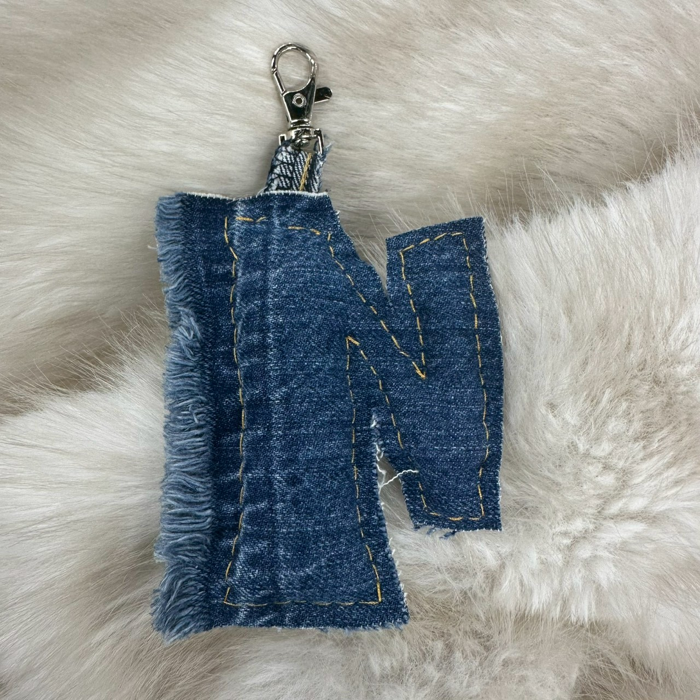
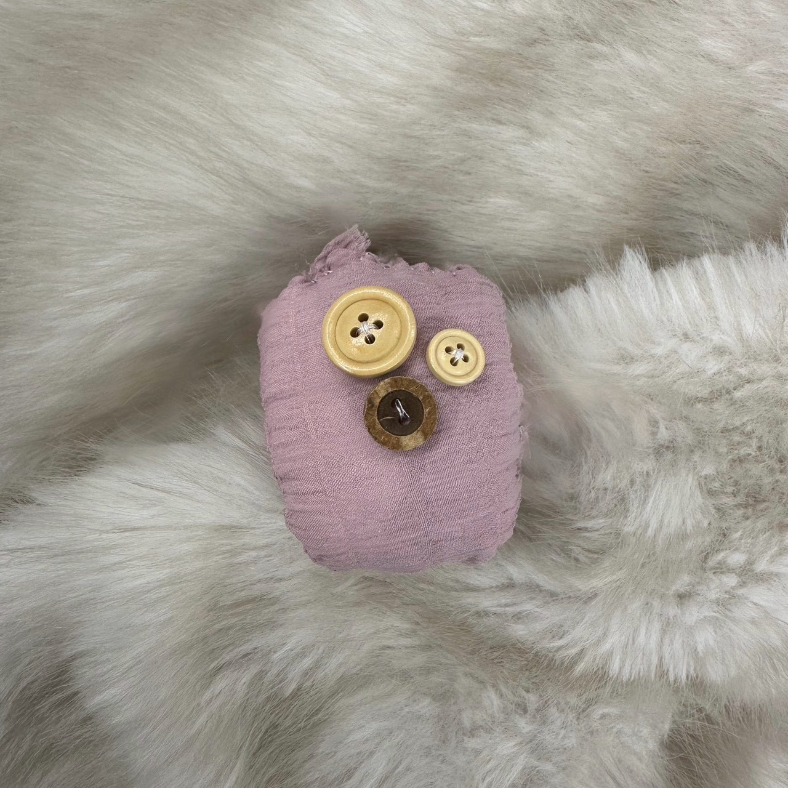
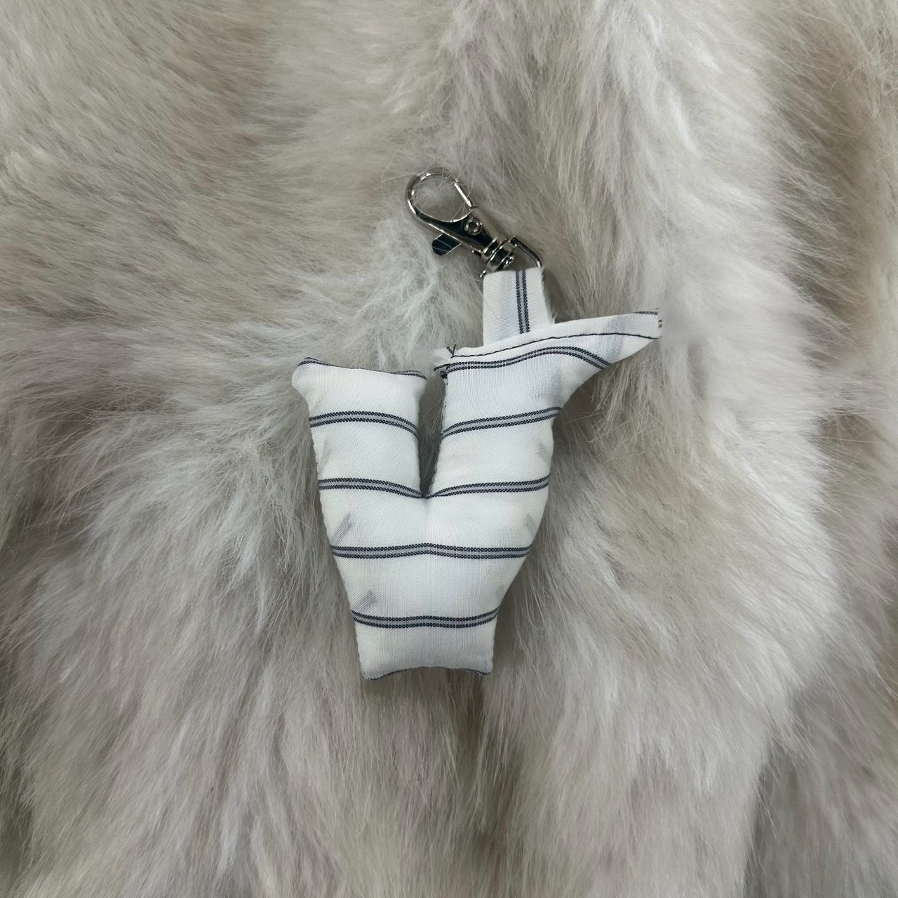
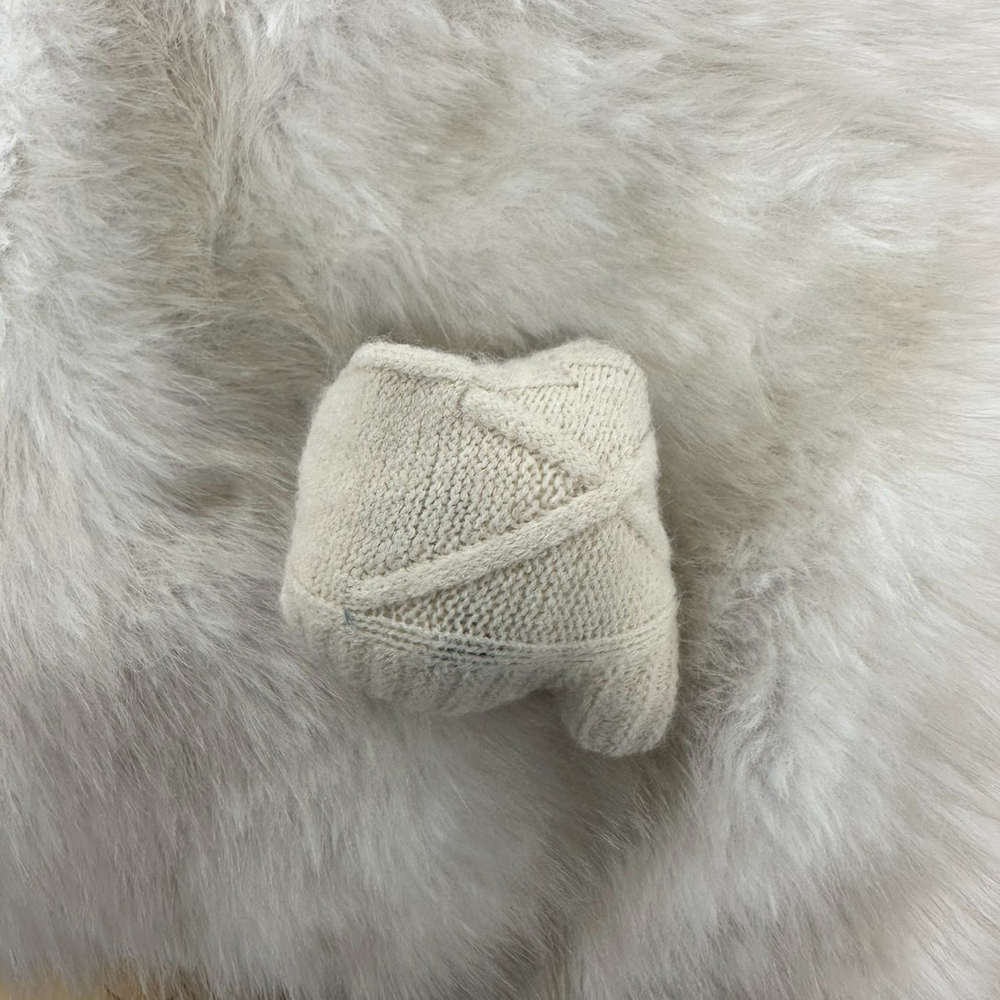
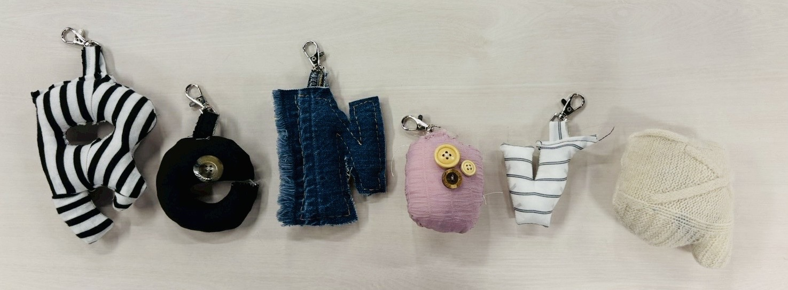
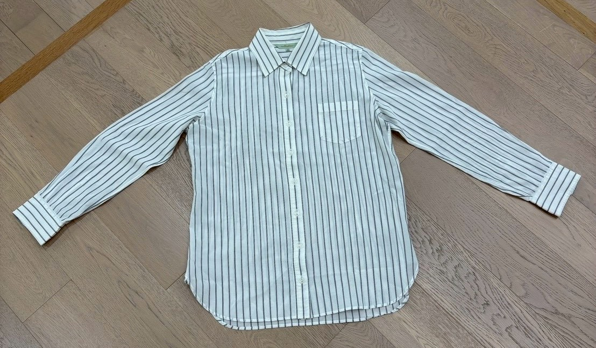
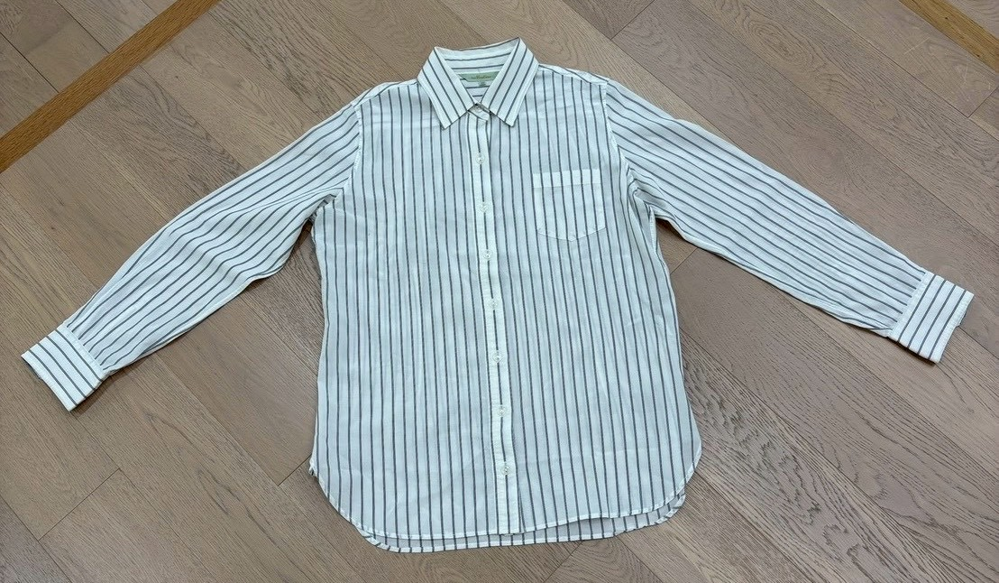
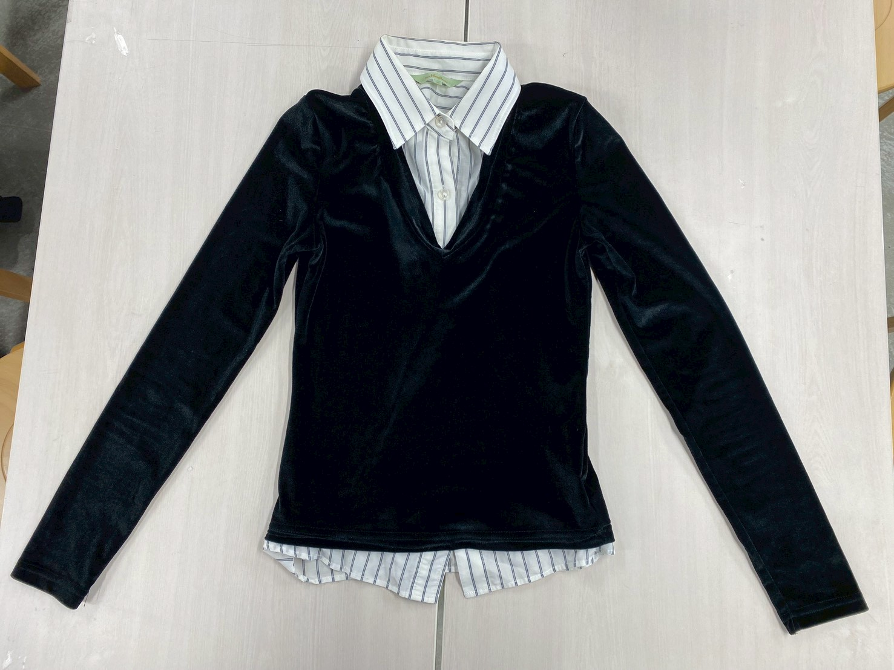
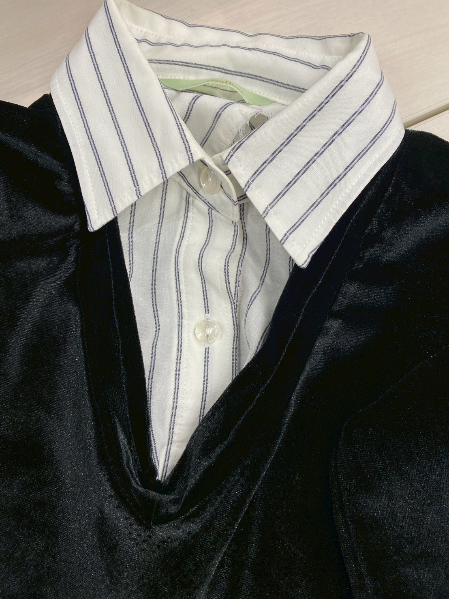
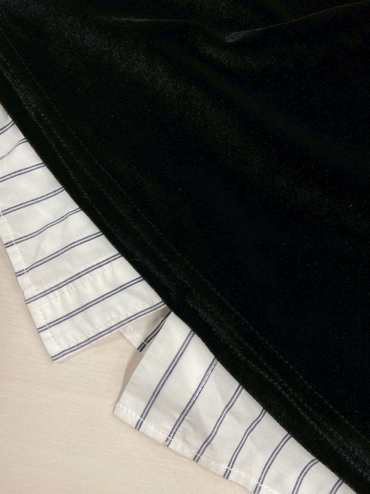

２０２５年１２月１２日
【やったこと】
- はぎれで小物づくり（アルファベットのキーホルダー）
- リメイク服作成(黒シャツ×ストライプシャツ)
- ブランドのポジショニング調べ
はぎれで小物づくり（アルファベットのキーホルダー）
あやねA~Zすべて作る時間は無いため、ブランド名のReNovaをつくることにした。
残りのN・o・v・aが完成！
リメイク服を作った際に出たはぎれと、買ってきたわたとキーホルダーを使ってつくった。
   

リメイク服作成(黒シャツ×ストライプシャツ)
あやな仮止めしてた箇所を全部縫い合わせて完成させた。
 リメイク前
リメイク前リメイク後
襟元を縫い合わせてアレンジ。
裾を縫い合わせてアレンジ。
ブランドのポジショニング調べ
さやか中間発表で教えてもらった「good on you」というエシカルファッションのレーティングサイト等を参考にしながら、 自分たちのブランドをどんな立ち位置にして進んでいくか検討した。
ポジショニングマップについては最終発表資料に掲載。